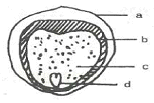
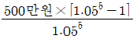
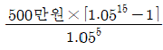
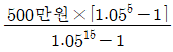
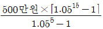
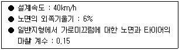
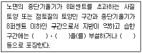

산림산업기사 (2017-05-07 기출문제)
1과목: 조림학
1. 겉씨식물에 속하는 수종은?
- 비자나무
- 오동나무
- 신갈나무
- 오리나무
(정답률: 70%)

2. 종자의 품질 평가 기준으로 발아율과 순량률을 곱하여 알 수 있는 것은?
- 효율
- 순도
- 발아력
- 발아세
(정답률: 82%)
3. 인공조림과 천연갱신을 비교한 설명으로 옳지 않은 것은?
- 인공조림은 조림할 수종의 선택의 폭이 넓다.
- 인공조림은 천연갱신에 비해 조림지의 기후와 토양에 적합하지 못할 경우 조림 실패율이 높다.
- 천연갱신은 그곳의 임목이 이미 긴 세월을 통해서 그 곳 환경에 적응된 것이므로 성림의 실패가 적다.
- 인공조림은 일반적으로 동령단순림을 조성하는데 이러한 인공조림법의 반복은 임지생산력과 조림성과를 점차적으로 향상시킨다.
(정답률: 74%)
4. 내음력이 가장 약한 수종은?
- 녹나무
- 전나무
- 자작나무
- 가문비나무
(정답률: 71%)
5. 온대지역에 있어서 인위적인 요인으로 산림이 파괴되지 않는다면 최종적으로 산림이 형성 되는 수종은?
- 양수 수종
- 음수 수종
- 중용 수종
- 조림 수종
(정답률: 77%)
6. 내음성이 약한 양수를 갱신하는데 적용하기 힘든 작업종은?
- 택벌작업
- 개벌작업
- 모수작업
- 왜림작업
(정답률: 70%)
7. 아래의 종자 단면도에서 내종피는?

- a
- b
- c
- d
(정답률: 90%)
8. 수목 체내에서 이동이 비교적 잘 안되고 부족하면 분열 조직에 심한 피해를 주는 양분원소는?
- 인
- 칼슘
- 질소
- 마그네슘
(정답률: 76%)
9. 생가지치기를 하면 상처 부위가 부패될 수 있는 가능성이 가장 높은 수종은?
- Larix kaempferi
- Pinus densiflora
- Prunus serrulata
- Populus davidiana
(정답률: 61%)
10. 묘포지를 선정할 때 고려해야 할 사항으로 거리가 먼 것은?
- 기후
- 경사
- 토양
- 인접 산지의 식생형태
(정답률: 78%)
11. 묘목 곤포 작업의 정의로 옳은 것은?
- 굴취한 묘목을 규격에 따라 나누는 일
- 포지에서 양성된 묘목을 식재될 산지까지 수송하는 일
- 묘목을 식재지까지 운반하기 위해 알맞은 크기로 다발 묶음하여 포장하는 일
- 묘목을 심기 전 일시적으로 도랑을 파서 그 안에 뿌리를 묻어 건조를 방지하고 생기를 회복시키는 일
(정답률: 89%)
12. 수관급에 기초해서 행하여지는 간벌방법으로 옳지 않은 것은?
- 정량간벌
- 하층간벌
- 상층간벌
- 택벌식간벌
(정답률: 71%)
13. 산벌작업에서 충분한 결실연도가 되어 실시하여 1회의 벌채로 그 목적을 달성하는 작업방법은?
- 후벌
- 하종벌
- 결실벌
- 예비벌
(정답률: 70%)
14. 덩굴치기 작업에 대한 설명으로 옳지 않은 것은?
- 덩굴식물이 뿌리 속의 저장 양분을 소모한 7월경에 실시하는 것이 좋다.
- 조림목을 감고 올라가서 피해를 주는 각종 덩굴식물을 제거하는 작업이다.
- 약제 처리할 때 방제 효과를 높이기 위하여 비 오는 날은 실시하지 않는다.
- 칡과 같은 덩굴은 줄기의 지표면 부근을 절단하는 것이 가장 효과적이다.
(정답률: 81%)
15. 종자 발아에 후숙을 필요로 하지 않는 수종으로만 짝지어진 것은?
- 잣나무, 버드나무
- 잣나무, 물푸레나무
- 버드나무, 이태리포플러
- 물푸레나무, 이태리포플러
(정답률: 63%)
16. 교림의 정의로 옳은 것은?
- 두 가지 이상의 수종으로 이루어진 숲
- 현저한 수령 차이가 있는 수목들로 구성된 숲
- 영양번식에 의한 맹아가 기원이 되어 이루어진 숲
- 종자에서 발생한 치수가 기원이 되어 이루어진 숲
(정답률: 84%)
17. 식재본수 및 식재밀도 결정에 영향을 미치는 인자가 아닌 것은?
- 경영목표
- 지리적 조건
- 수종의 특성
- 식재인력의 숙련도
(정답률: 78%)
18. 일본잎갈나무의 꽃눈이 분화하는 시기는?
- 3월경
- 5월경
- 7월경
- 9월경
(정답률: 66%)
19. 산림 천이에 대한 설명으로 옳지 않은 것은?
- 산림 천이 초기에는 종다양성이 증가한다.
- 1차천이는 2차 천이보다 생산력이 높은 단계에서 시작된다.
- 산림 벌채 후 산불, 기상재해 등은 산림의 2차 천이를 유발하는 주요 요인이다.
- 1차 천이는 기존 식물상 자체에 의하여 유도 되는 자발천이의 과정으로 볼 수 있다.
(정답률: 77%)
20. 산림 토양의 지력을 증진하기 위한 작업에 해당하지 않는 것은?
- 개벌 실시
- 적당한 비음유지
- 토양의 산도조정
- 낙엽 및 낙지보호
(정답률: 81%)
2과목: 산림보호학
21. 병징은 있으나 표징이 없는 수목병은?
- 뽕나무 오갈병
- 낙엽송 잎떨림병
- 삼나무 붉은마름병
- 소나무 리지나뿌리썩음병
(정답률: 64%)
22. 솔잎혹파리에 대한 설명으로 옳지 않은 것은?
- 우화 최성기가 5~6월이다.
- 10~11월에 번데기로 월동한다.
- 낙엽 밑이나 흙속에서 월동한다.
- 유충이 솔잎 기부에 벌레혹을 형성한다.
(정답률: 77%)
23. 잣나무 털녹병균의 침입 부위와 발병 부위가 옳게 짝지어진 것은?
- 잎의 기공 - 잎
- 줄기의 피목 - 잎
- 잎의 기공 - 줄기
- 줄기의 피목 - 줄기
(정답률: 67%)
24. 뿌리혹병의 방제법으로 옳지 않은 것은?
- 병이 없는 건전한 묘목을 식재한다.
- 접목할 때 쓰이는 도구는 소독하여 사용한다.
- 재식할 묘목은 스트렙토마이신 용액에 침지하는 것이 좋다.
- 심하게 발생한 지역에서는 내병성 수종인 포플러류를 식재한다.
(정답률: 79%)
25. 곤충이 부적합한 환경에서 발육을 일시 정지하는 것은?
- 이주
- 탈피
- 변태
- 휴면
(정답률: 83%)
26. 동물에 의한 수목 피해로 옳지 않은 것은?
- 두더지는 묘목의 뿌리를 가해한다.
- 고라니는 새순과 나무 열매를 가해한다.
- 다람쥐는 겨울철에 나무 뿌리를 가해한다.
- 멧토끼는 겨울에 어린 나무의 수피를 가해한다.
(정답률: 80%)
27. 방화선의 설치 위치로 적절하지 않는 것은?
- 나지 또는 미립목지에 위치
- 급경사지, 관목 및 고사목 집적지역에 위치
- 인공적 또는 천연적인 도로, 하천 등이 있는 위치
- 산정 또는 능선 바로 뒤편 8~9부 능선에 위치
(정답률: 68%)
28. 파이토플라스마에 의한 수목병 방제에 사용되는 약제는?
- 아바멕틴
- 테부코나졸
- 에마멕틴벤조에이트
- 옥시테트라사이클린
(정답률: 85%)
29. 세균에 의하여 발병하는 수목병은?
- 철쭉 떡병
- 포플러 잎마름병
- 호두나무 뿌리혹병
- 낙엽송 가지끝마름병
(정답률: 65%)
30. 침엽수 묘목의 모잘록병을 방제하는데 가장 알맞은 방법은?
- 중간 기주를 제거한다.
- 살균제로 토양소독과 종자소독을 한다.
- 살충제를 뿌려서 매개 곤충을 구제한다.
- 질소질비료를 충분히 주어 묘목을 튼튼하게 한다.
(정답률: 80%)
31. 곤충과 비교한 거미의 특징으로 옳지 않은 것은?
- 홑눈만 있다.
- 날개가 없다.
- 더듬이가 2쌍이다.
- 탈바꿈(변태)을 하지 않는다.
(정답률: 71%)
32. 1년에 2회 이상 발생하는 해충은?
- 솔잎혹파리
- 광릉긴나무좀
- 미국흰불나방
- 호두나무잎벌레
(정답률: 85%)
33. 잣나무의 구과를 가해하는 해충은?
- 소나무좀
- 솔알락명나방
- 잣나무넓적잎벌
- 북방수염하늘소
(정답률: 65%)
34. 곤충의 기관에서 체외로 방출되어 같은 종끼리 통신을 하는데 이용되는 물질은?
- 페로몬
- 호르몬
- 알로몬
- 카이로몬
(정답률: 87%)
35. 봄철 수목 생장이 시작된 후 내리는 서리에 의해 수목이 입는 피해는?
- 상렬
- 상주
- 조상
- 만상
(정답률: 79%)
36. 소나무 혹병의 중간기주로 방제를 위하여 제거해야 할 수종은?
- 오리나무
- 단풍나무
- 자작나무
- 신갈나무
(정답률: 72%)
37. 해충 방제를 위한 임업적 방제방법으로 옳지 않은 것은?
- 단순림 조성의 확대
- 내충성 수종의 식재
- 적당한 간벌로 임분밀도 조절
- 토양 및 기후에 적합한 수종의 조림
(정답률: 77%)
38. 밤나무 흰가루병균으로 잎의 앞뒷면에 밀가루를 뿌려 놓은 것 같아 보이는 것은?
- 분생포자
- 자낭포자
- 후벽포자
- 담자포자
(정답률: 60%)
39. 토양훈증제의 설명으로 옳지 않은 것은?
- 메탐소듐, 메틸브로마이드 등이 있다.
- 인화성이 있고 구석까지 침투하는 확산능력이 있어야 한다.
- 비등점이 낮은 원제를 액체, 고체 또는 압축가스의 형태로 용기에 충전한 것이다.
- 일정한 시간 내에 기화하여 훈증효과를 나타내야 하므로 휘발성이 큰 약제를 써야한다.
(정답률: 57%)
40. 살아있는 나무와 죽은 나무의 목질부를 모두 가해하는 해충은?
- 소나무좀
- 밤나무혹벌
- 미국흰불나방
- 느티나무벼룩바구미
(정답률: 67%)
3과목: 임업경영학
41. 산림경영계획에 대한 설명으로 옳은 것은?
- 우리나라 국유림 종합계획 기간은 5년이다.
- 사유림 소유자의 산림경영계획 수립은 의무가 아니라 권장사항이다.
- 한번 작성된 산림경영계획은 그 계획 기간 동안에는 변경이 불가능하다.
- 국유림경영계획 작성의 의무는 국유림이 존재하는 해당 지방자치단체장에게 있다.
(정답률: 73%)
42. 임업경영 지도원칙 중에서 보속성 원칙에 대한 설명으로 옳은 것은?
- 수익률을 가장 크게 하는 원칙
- 해마다 목재수확을 균등하게 할 수 있는 원칙
- 최소의 비용으로 최대의 효과를 발휘하는 원칙
- 생산량을 생산요소의 수량으로 나눈 값이 최고가 되도록 하는 원칙
(정답률: 86%)
43. 흉고형수에 영향을 미치는 인가자 아닌 것은?
- 수고
- 지위
- 수종
- 근원직경
(정답률: 61%)
44. 임업경영의 성과를 나타내는 가장 정확한 지표로 임업경영의 결과에 의하여 직접적으로 얻은 소득에 해당하는 것은?
- 임업소득
- 임업조수익
- 임업총수입
- 임업현금수입
(정답률: 70%)
45. 보속작업에서 한 작업급에 속하는 모든 임분을 일순벌하는데 필요한 기간을 나타내는 임업 생산기간은?
- 윤벌기
- 갱정기
- 회귀년
- 정리기
(정답률: 72%)
46. 수확조정기법 중 평분법에 대한 설명으로 옳지 않은 것은?
- 재적평분법은 일반적으로 경제변동에 대한 탄력성이 없는 것으로 평가된다.
- 절충평분법은 재적평분법과 면적평분법의 장점을 채택하여 절충한 것이다.
- 면적평분법은 제2윤벌기에 산림이 법정상태가 되어 개벌작업에는 응용할 수 없다.
- 평분법의 특징은 윤벌기를 일정한 분기로 나누어 분기마다 수확량을 균등하게 하는 것이다.
(정답률: 60%)
47. 수고 곡선 유도방법으로 자료가 많은 경우 또는 정확도를 요구할 때 사용하는 것은?
- 이동평균법
- 자유곡선법
- 최소자승법
- 드라우트법
(정답률: 61%)
48. 우리나라 산림 소유 구분에 따른 분류로 옳지 않은 것은?
- 법정림
- 공유림
- 국유림
- 사유림
(정답률: 81%)
49. 음(-)의 값이 나올 수 있는 투자효율 분석법은?
- 회수기간법
- 순현재가치법
- 투자이익률법
- 수익비용률법
(정답률: 64%)
50. 산림자원의 효율적 조성과 육성을 위해 산림의 기능구분에 해당하지 않는 것은?
- 목재생산림
- 산림휴양림
- 수원함양림
- 기업경영림
(정답률: 65%)
51. 유령림의 임목평가 방법으로 가장 적합한 것은?
- 비용가법
- 기망가법
- 매매가법
- 환원가법
(정답률: 79%)
52. 임업의 경제적 특성에 해당되는 것은?
- 자연조건의 영향을 많이 받는다.
- 임목의 성숙기가 일정하지 않다.
- 토지나 기후조건에 대한 요구도가 낮다.
- 임업노동은 계절적 제약을 크게 받지 않는다.
(정답률: 69%)
53. 어떤 소나무림에서 간벌을 하면 500만원씩의 수입을 얻을 것으로 예상된다. 연중에는 3회 간벌을 하고, 5년간 연 이율을 5%로 적용할 경우 후가 계산에 적합한 식은?




(정답률: 43%)
54. 고정자본재에 해당하는 것은?
- 농약
- 묘목
- 임도
- 산림용 비료
(정답률: 84%)
55. 임지 취득 후 조림 등 임목육성에 적합한 상태로 개량하는데 소요된 모든 비용의 후가에서 그 동안의 수입의 후가를 공제한 값으로 평가하는 방법은?
- 대용법
- 수익환원법
- 임지비용가법
- 임지기망가법
(정답률: 57%)
56. 각 산정 표준지법에서 스피겔릴라스코프를 사용하여 1개의 표준점에서 측정된 나무의 평균 본수가 10본이었으며 사용된 흉고단면적 정수는 2m2이었다면 이 임분의 ha당 흉고단면적은?
- 5m2
- 8m2
- 12m2
- 20m2
(정답률: 56%)
57. 법정축적은 일반적으로 어느 계절의 축적으로 계산하는가?
- 춘계
- 하계
- 추계
- 동계
(정답률: 71%)
58. 25년생 잣나무 임분의 입목재적이 45m2/ha이고 수확표의 입목재적은 50m2/ha이라면 입목도는?
- 0.5
- 0.7
- 0.9
- 1.1
(정답률: 66%)
59. 임목 측정에서 불완전한 기계 또는 계산에 의해 발생하는 오차는?
- 과오
- 누적오차
- 상쇄오차
- 표본오차
(정답률: 69%)
60. 감가상각비의 계산방법 중에 감가상각비 총액을 각 사용연도에 할당하여 매년 균등하게 감가하는 방법은?
- 정액법
- 정률법
- 연수합계법
- 작업시간비례법
(정답률: 66%)
4과목: 산림공학
61. 방위가 S49°10W일 때의 방위각은?
- 130°50
- 229°10
- 310°50
- 49°10
(정답률: 73%)
62. 벌목 운재 계획을 위한 예비조사가 아닌 것은?
- 임황 및 지황 조사
- 반출방법에 대한 조사
- 벌목구역의 개황 조사
- 기존 실행 결과에 의한 조사
(정답률: 67%)
63. 겨울에 산림수확작업을 수행하는 경우 장점으로 옳지 않은 것은?
- 잔존임분에 대한 영향이 적다.
- 해충과 균류에 의한 피해가 적다.
- 작업원 안전사고가 적게 발생한다.
- 수액 정지기간에 작업하므로 양질의 목재를 수확할 수 있다.
(정답률: 81%)
64. 임도 식생사면의 유지보수에 대한 설명으로 옳지 않은 것은?
- 사면으로 직접 물이 흐르도록 배수시설을 설치한다.
- 강수량이 일시 집중적인 곳에서 붕괴에 대비하여야 한다..
- 나무가 너무 커서 넘어질 경우 비탈면 붕괴가 되지 않도록 관리한다.
- 떼붙임을 한 사면은 주기적으로 풀베기를 실시하여 다른 식물의 생장을 막아주어야 한다.
(정답률: 72%)
65. 수중굴착 및 구조물의 기초바닥 등 상당히 깊은 범위의 굴착과 호퍼(hopper)작업에 적합한 기종은?
- 크레인(crane)
- 백호우(backhoe)
- 클램셸(clamshell)
- 어스드릴(earth drill)
(정답률: 65%)
66. 임도 설계시 곡선 설치를 생략하는 기준은?
- 내각이 140도 이상
- 내각이 145도 이상
- 내각이 150도 이상
- 내각이 155도 이상
(정답률: 65%)
67. 암반 비탈면 녹화에 주로 사용하는 공법이 아닌 것은?
- 새집 공법
- 피목녹화 공법
- 선떼붙이기 공법
- 덩굴받침망 설치 공법
(정답률: 61%)
68. 사방댐의 방수로 크기를 결정하는 주요 요인이 아닌 것은?
- 강수량
- 집수면적
- 댐의 종류
- 상류 하상의 상태
(정답률: 64%)
69. 다음 석재 중 압축강도가 가장 큰 것은?
- 사암
- 화강암
- 안산암
- 석회암
(정답률: 85%)
70. 습한 지대에서 임도의 노면이 가라앉는 것을 막기위하여 만드는 것은?
- 자갈길
- 흙모랫길
- 부순돌길
- 통나무길
(정답률: 76%)
71. 산지사방 식재용 수종의 요구조건으로 가장 부적절한 것은?
- 토양개량 효과가 기대될 것
- 뿌리 발육이 천천히 진행될 것
- 생장력이 왕성하여 잘 번성할 것
- 묘목의 생산비가 적게 들고 대량생산이 가능할 것
(정답률: 79%)
72. 주로 사면 기울기가 1:1보다 완만한 곳에 흙이 털어지지 않은 온떼를 사용하여 전면녹화를 목적으로 시공하는 산지사방 녹화공법은?
- 띠떼심기
- 줄떼다지기
- 선떼붙이기
- 평떼붙이기
(정답률: 75%)
73. 평판을 설치할 때 만족되어야하는 필수 조건이 아닌 것은?
- 표정
- 치심
- 정준
- 방위
(정답률: 63%)
74. 비탈면 녹화용 피복자재에 해당하지 않는 것은?
- 그라우트
- 볏집거적
- 쥬트네트
- 코이어네트
(정답률: 70%)
75. 다음 조건에서 임도 설계시 적용하는 곡선 반지름으로 가장 적합한 것은?

- 50m
- 60m
- 70m
- 80m
(정답률: 65%)
76. 임도의 합성기울기를 10%로 설정하려 할 때 외쪽기울기가 6%라면 종단 기울기는?
- 8%
- 10%
- 12%
- 14%
(정답률: 64%)
77. 옆도랑과 길어깨를 제외한 임도의 구조는?
- 대피소
- 유효너비
- 도로너비
- 합성기울기
(정답률: 74%)
78. 체인톱의 쏘체인 규격은 무엇으로 구분하는가?
- 피치
- 중량
- 배기량
- 엔진출력
(정답률: 72%)
79. 기슭막이에 대한 설명으로 옳지 않은 것은?
- 황폐계천에서 유수에 의한 계안의 횡침식을 방지하기 위해 설치한다.
- 유로의 만곡에 의하여 물의 충격을 받거나 붕괴 위험성이 있는 계천변에 설치한다.
- 계류의 둑쌓기 구간 내에 시공할 경우 둑쌓기 계획비탈기울기와 동일한 기울기로 계획한다.
- 침식이 심하고 유수의 충돌이 심한 곳에서는 통나무 기슭막이나 바자기슭막이를 적용한다.
(정답률: 53%)
80. 다음 ( )안에 들어갈 용어가 아닌 것은?

- 섶
- 쇄석
- 자갈
- 콘크리트
(정답률: 77%)